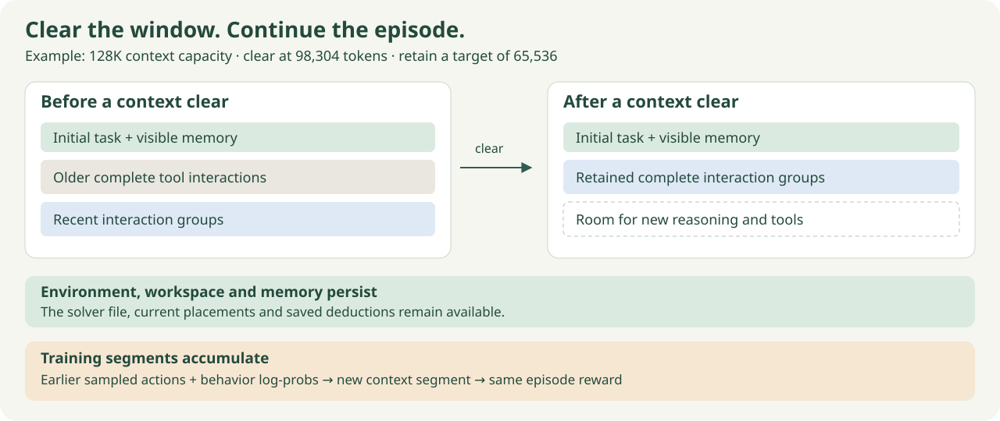
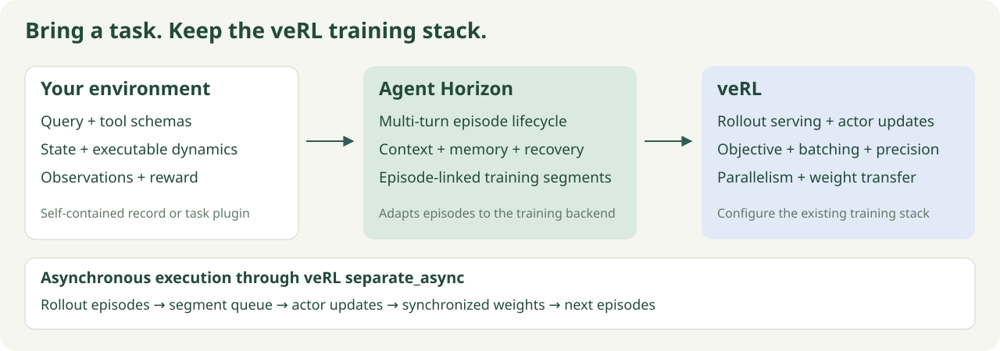
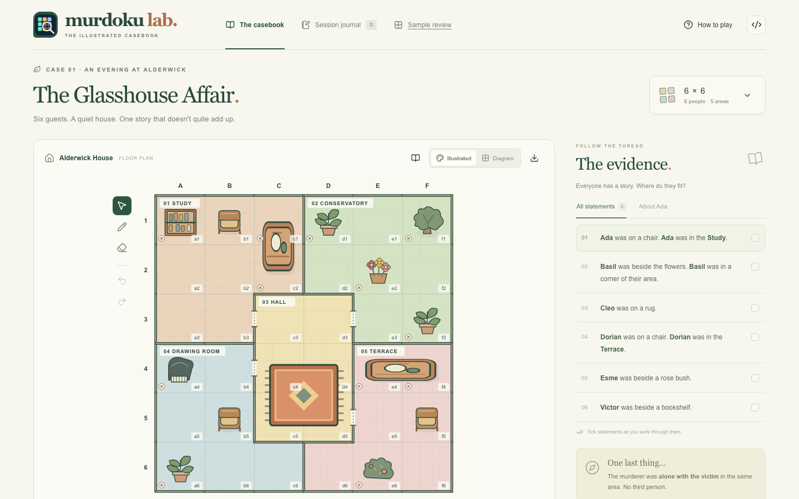

Long-horizon agentic RL infrastructure
Agent Horizon.
Train stateful agents on veRL. Connect an environment, supply queries and rewards, and let interactions continue across context clears.

Keep the episode alive.
Manage active context independently from cumulative turns and trajectory length. Preserve environment state, files and memory across context clears.
Bring your own environment.
Define stateful tools, public observations and rewards. Register the task through the environment contract; use separate trainer plugins for algorithm-specific behavior.
Train across context changes.
Retain sampled actions and behavior log-probabilities as segments linked to the same episode reward.
Resume a consistent episode.
Snapshot and restore context, memory, environment state and rollout progress together.
Your task. Our episode runtime. veRL training.

Keep veRL's configurable objectives, model serving, actor optimization and distributed execution. Agent Horizon connects stateful episodes and their training segments to that stack, including its separate_async rollout path.
Get started.
Prepare the pinned runtime, provide training and validation queries, and select a model checkpoint. Follow the training quickstart to launch.
Demo: Murdoku Lab.

Detective puzzles provide text and visual observations, stateful tools and gold rewards. The game and grader live in Murdoku Lab; Agent Horizon supplies training infrastructure.
Download demo queries and rollouts → · Explore the puzzle workshop → · Read the motivation →